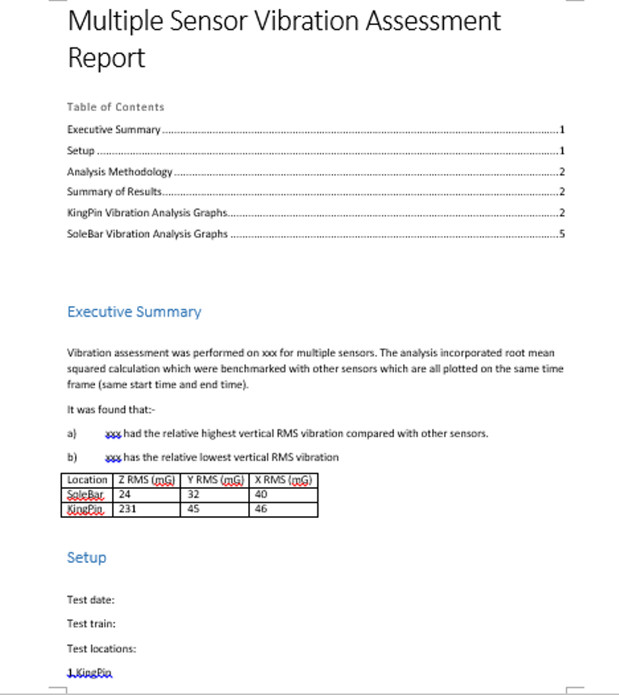
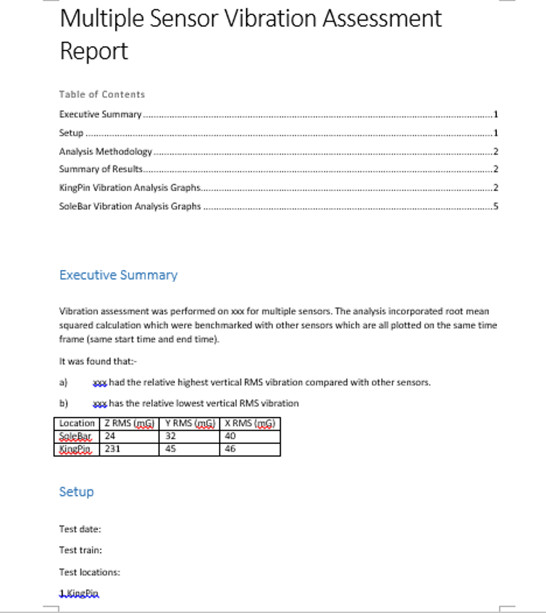

Perform Station to station analysis

1. Adjust the sensor sampling frequency in the microSD card
2. Install the sensor using adhesive Loctite 495
3. Press the button to remove gravity offset
4. All the data gets recorded to the microSD card in an Excel file
 
